it's fine really, silly me!
A Happening: It's Fine Really, Silly Me, was the result of a three-day intensive residency as part of Time Window's "Rule of 3" program, presented in February 2025 in the whole building of Time Window. The event brought together a group of artists—Aubane Bedtime Martinez, Cem Altinoz, Kivanc, Rosa Vrij, Omid Kheirabadi, Hellen Boyko, Alice Gioria, and Iris Boer—to explore answers beyond "TINA" (There Is No Alternative). With the critical framework of Mark Fisher's "Capitalist Realism" guiding the inquiry, the happening invited both participants and audience members to imagine and embody alternatives to neoliberal systems.
Through a series of collaborative performances, sound interventions, and interactive spaces, the artists created a setting where the boundaries between performance and audience were intentionally blurred, allowing the audience to actively shape and contribute to the unfolding experience. This immersive exploration questioned the current societal structures and proposed new, community-focused ways of being, acting, and imagining.
This Happening was a space of experimentation and collective creativity, opening up a dialogue on how we might break free from the restrictions of a world that often believes there is no alternative.
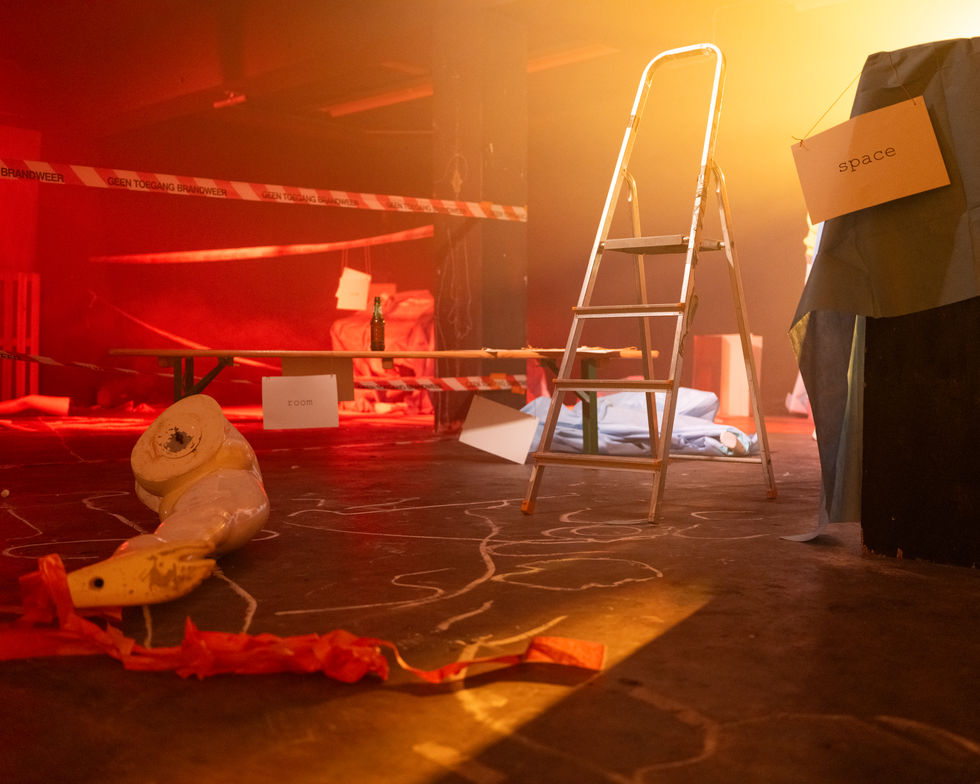
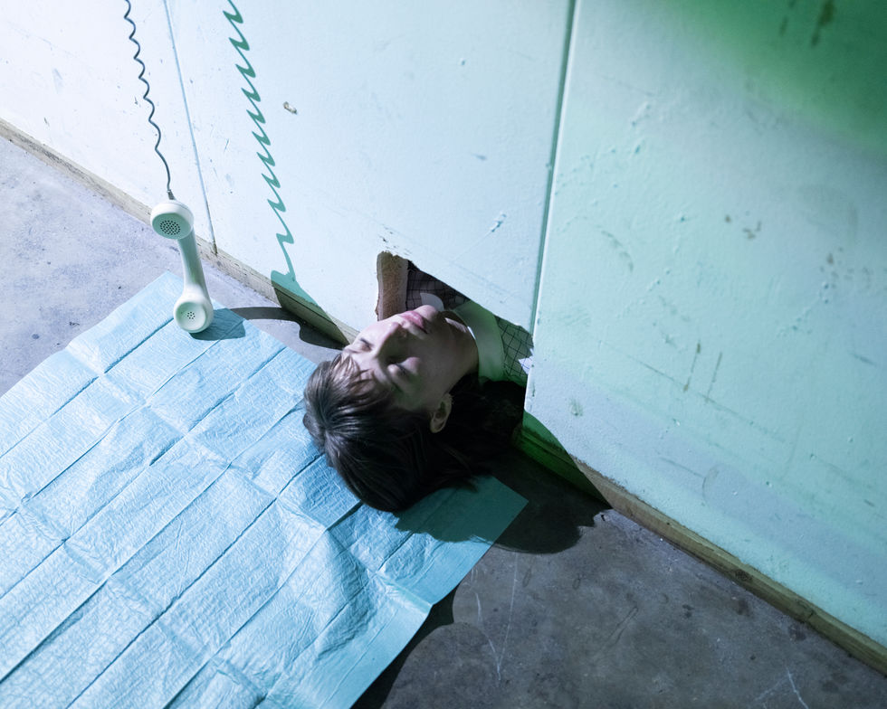
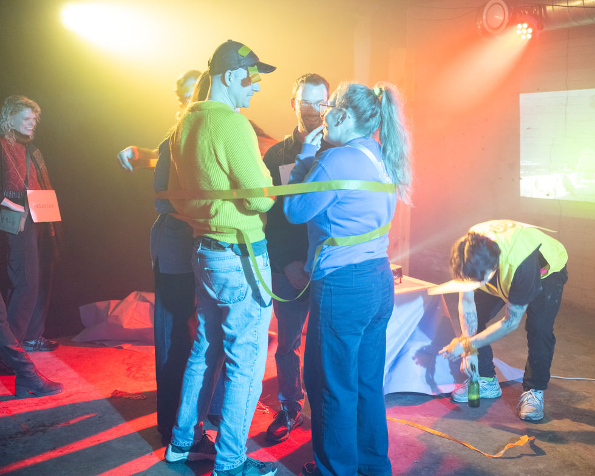
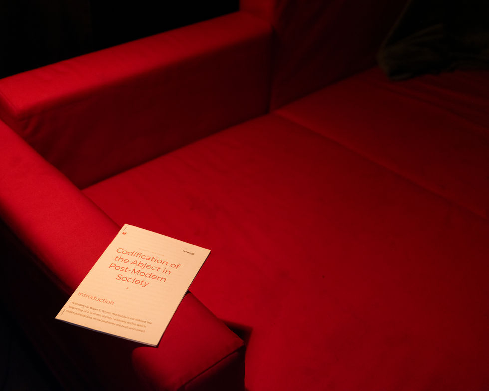
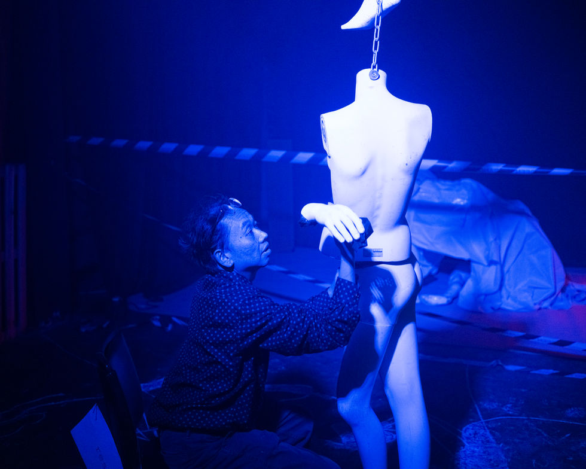
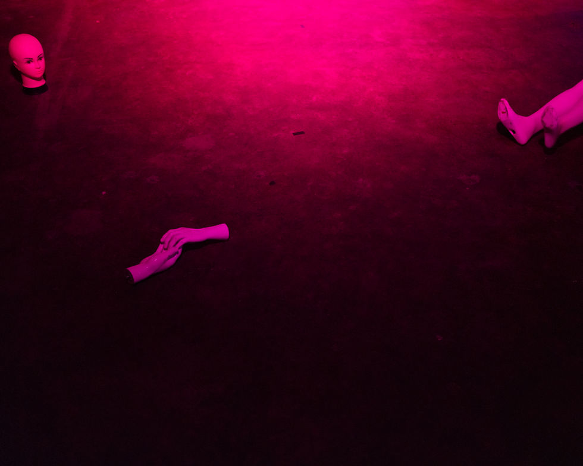
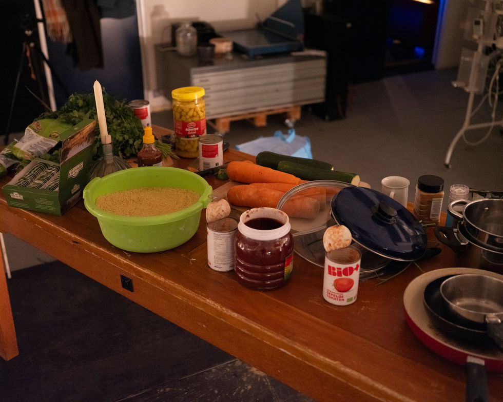
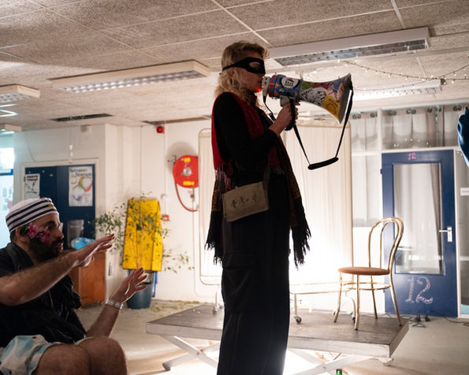
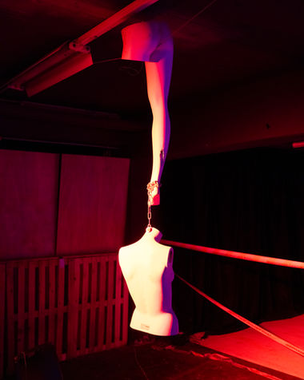
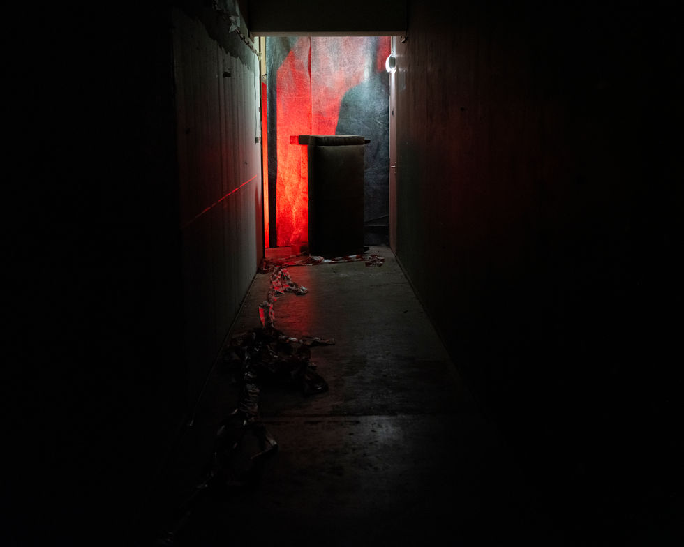
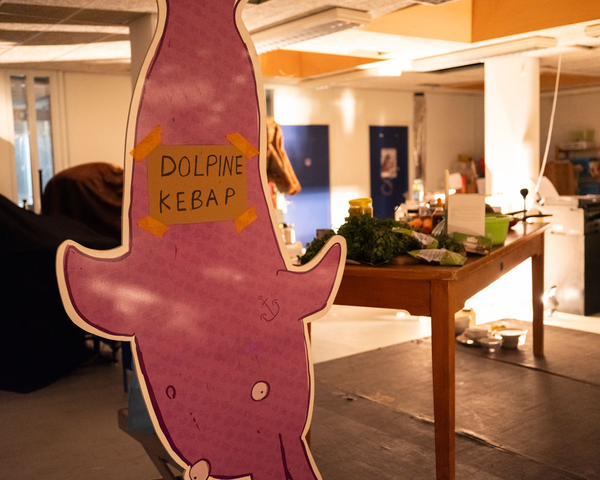
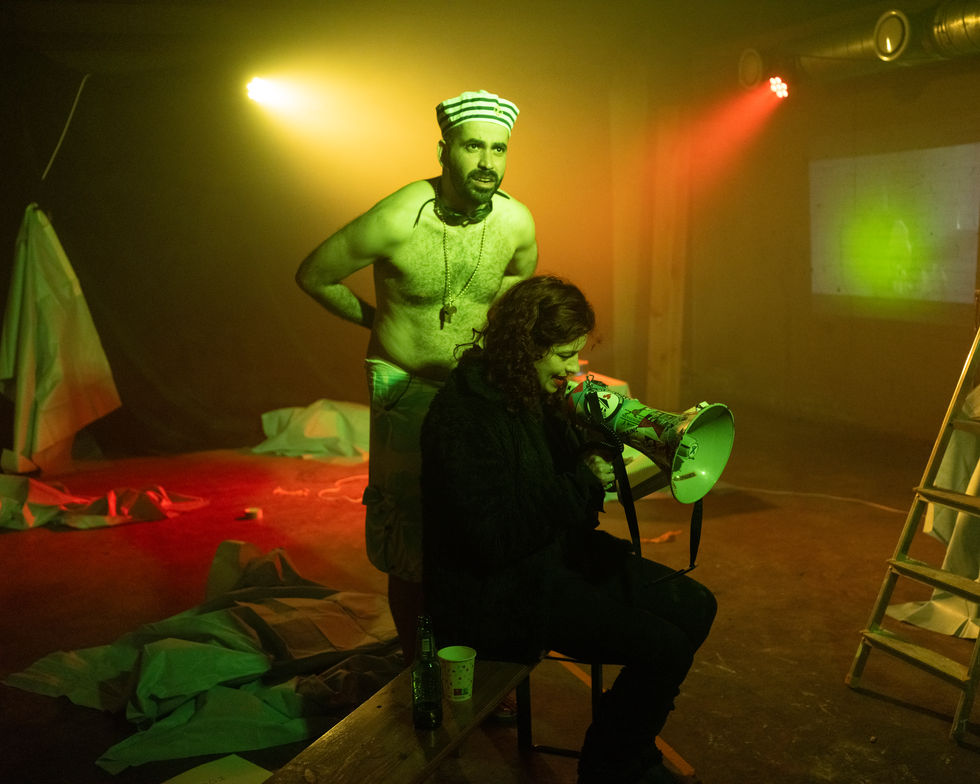
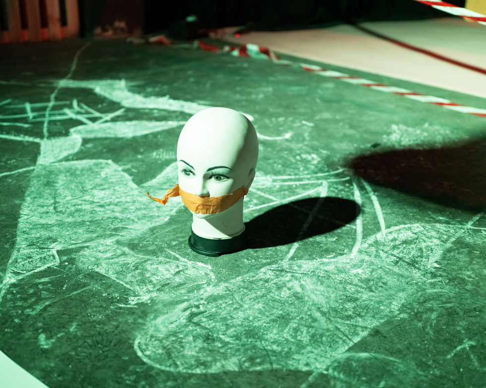
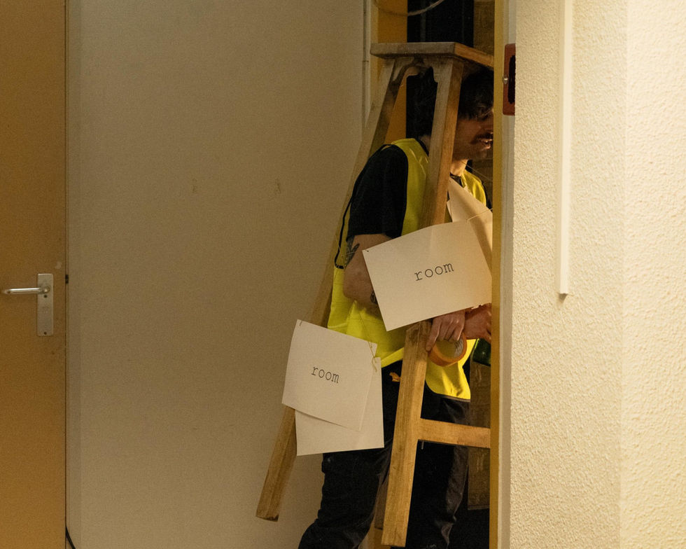
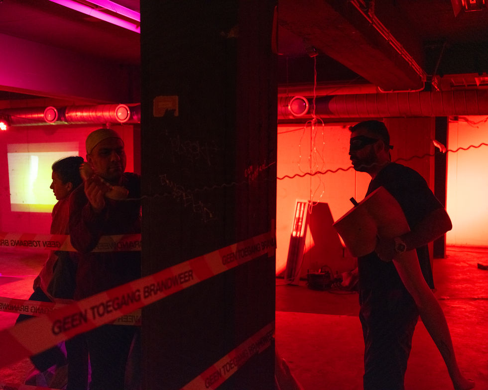